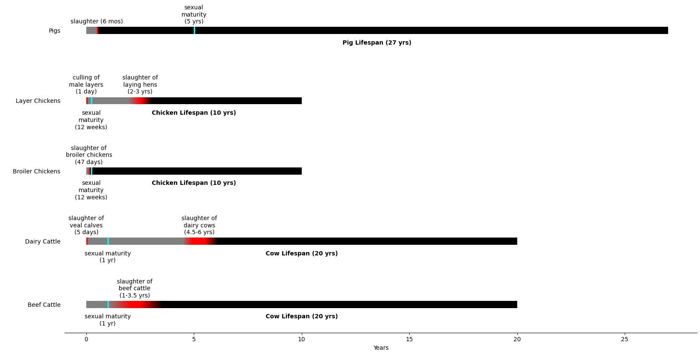

Ages of Slaughter
The below charts compare the average age of slaugher for different types of animals on factory farms in the United States.

Image Sources
- Pig by monkik from the Noun Project
- Chicken by Symbolon from the Noun Project
- Cow by Symbolon from the Noun Project
Data Sources
- Hoffman, Jessica M., and Teresa G. Valencak. “A Short Life on the Farm: Aging and Longevity in Agricultural, Large-Bodied Mammals.” GeroScience, vol. 42, no. 3, May 2020, pp. 909–22.
PubMed Central, https://doi.org/10.1007/s11357-020-00190-4.
- Krautwald-Junghanns, M. E., et al. “Current Approaches to Avoid the Culling of Day-Old Male Chicks in the Layer Industry, with Special Reference to Spectroscopic Methods.”
Poultry Science, vol. 97, no. 3, Mar. 2018, pp. 749–57. ScienceDirect, https://doi.org/10.3382/ps/pex389.
- Mccune, Kathy. “When Is Your Pig Ready To Butcher? 5 Ways To Figure It Out.” Family Farm Livestock, https://familyfarmlivestock.com/when-is-your-pig-ready-to-butcher-5-ways-to-figure-it-out/. Accessed 3 Dec. 2021.
- “U.S. Broiler Performance.” National Chicken Council, https://www.nationalchickencouncil.org/about-the-industry/statistics/u-s-broiler-performance/. Accessed 3 Dec. 2021.
- U.S. Department of Agriculture. “Slaughter Cattle Grades and Standards.” USDA Agricultural Marketing Service, https://www.ams.usda.gov/grades-standards/slaughter-cattle-grades-and-standards. Accessed 3 Dec. 2021.
- Vries, A. De, and M. I. Marcondes. “Review: Overview of Factors Affecting Productive Lifespan of Dairy Cows.” Animal, vol. 14, no. S1, Cambridge University Press, Mar. 2020, pp. s155–64.
Cambridge University Press, https://doi.org/10.1017/S1751731119003264.